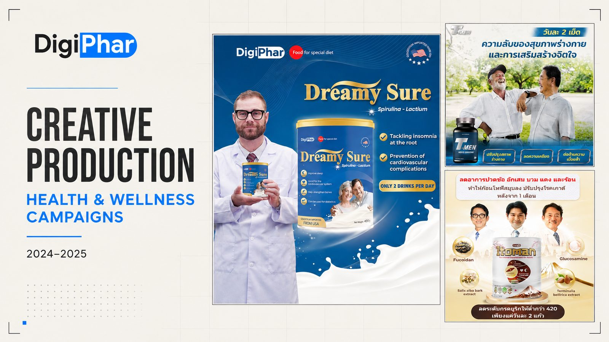
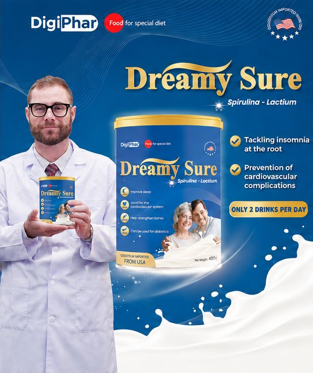

Four markets, one 3:1 rule.
How I ran Meta campaigns for a health brand in Thailand, the Philippines, Cambodia and Laos, and wrote, shot and edited the ads that ran in them.

01Context
A health and wellness brand selling direct to consumers in four countries, with each market running its own campaigns.
Digiphar sold through Meta in Thailand, the Philippines, Cambodia and Laos. Each market needed its own campaigns, copy and checks, and they all ran on the same daily schedule. I sat in the Media and Advertising team and owned campaign execution from the script to the report.
02The challenge
Every campaign had to hit one commercial rule: £600 revenue with ad spend held at 33% or less, roughly a 3:1 return.
That leaves very little room for spending on ads that aren't working. If you launch one ad and wait, you learn very little. If your tracking is loose, you can't tell which market, audience or creative is really earning the return.
03What I did
I treated every launch as a structured test. Because I could build the creative myself, the variants were ready on day one and didn't have to wait for a design queue.
Campaigns set up per market
Sales and click-to-message campaigns for each of the four markets, with consistent naming so performance could be compared like for like.
Variant sets built before launch
I wrote the hooks and ad copy, cut the video ads in Premiere Pro, and briefed the design team on matching statics. Every campaign launched with a full set of variants, never a single ad.
Scripts and shoots
I wrote the scripts for our commercials and coordinated 6+ shoots with international actors, managing production budgets of up to £3,000 and delivering usable video and image assets on schedule.
Tracking that can be trusted
I set up UTM tagging and Meta pixel conversion events, then used CTR, CPC and placement data to see which market, audience and ad was earning the return.
Daily optimisation
I checked cost per result every day, moved spend towards the audiences and creative that converted, and replaced underperforming ads with new hooks and messaging.
Quality control across markets
I proofread copy and visuals for every market before launch, to keep the brand consistent and catch errors before they cost money.
04Creative
Ads from Digiphar's health and wellness range, including localised versions for the Thai market. I scripted and edited more than 30 video ads, and each campaign launched with two or three variants that differed in the first few seconds.

05Outcome
Happy to walk you through how a week of optimisation went, market by market, in an interview.
06What I learned
Tracking comes before scaling. Until the UTMs and conversion events matched across all four markets, comparing them was guesswork. Fixing that came first.
Proofreading is part of performance. A typo in one market's ad wastes the same budget as a weak hook, so I read every market's copy before anything went live.